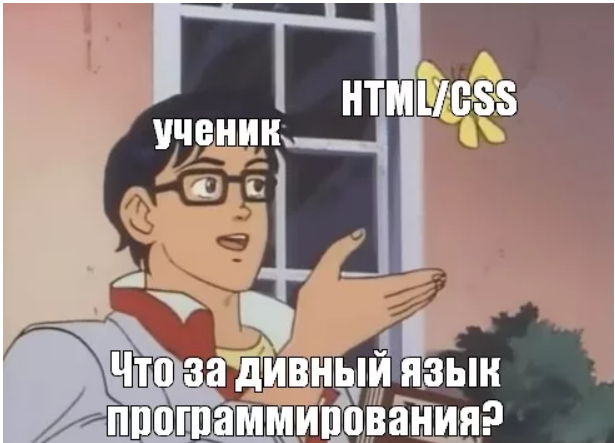

1
2
3
4
5
6
7
8
9
10
11
12
1.1 Введение
Я рад видеть вас на курсе «Frontend разработчик на HTML, CSS и JavaScript». В этом вводном уроке я расскажу вам
о том, что вас ждёт, и дам рекомендации по прохождению курса. Жмите стрелку «вправо» на клавиатуре или зеленую
кнопку «следующий шаг» под этим текстом, чтобы перейти к следующему шагу.
В этом курсе мы изучим HTML, CSS, JavaScript, Figma, Pixso, Photoshop, VS Code, Emmet, BEM, Bootstrap, Vue, Git,
GitHub, Gulp. Не переживайте, если пока что эти слова не понятны и кажутся страшными. Расскажу обо всем этом по
порядку в данном курсе так, что поймет каждый.
Сначала о формате
Каждый модуль состоит из нескольких уроков.
Обычно один урок посвящен обсуждению одного понятия в общем.
Видео чередуются с простыми тестами, состоящими из одного-двух вопросов для проверки изученного ранее материала.
Внутри одного урока видеофрагменты и тесты на платформе Stepik принято называть шагами (стэпами). В верхней
части окна
вы можете видеть несколько иконок-квадратов. Это кнопки навигации, позволяющие перемещаться от одного фрагмента
видео
или тестов к другому. Также можно использовать клавиши «вправо» и «влево» на клавиатуре.
Задачи
Важной частью курса является закрепление изученного материала через решение задач. На шагах с задачами рядом с
полем
ответа приводится число баллов, которое вы получите за её решение, а также набранный вами балл.
Все задачи можно решать любое количество раз. За неверные попытки баллы не снижаются, не бойтесь ошибаться!
Также, все
ваши прошлые решения остаются доступны по ссылке под полем задачи.
В других моих курсах обучение построено так же как и тут. Теория, видео, практика, примеры, готовые материалы,
иногда
присутствует немного юмора. Подробнее о интересующем вас курсе можно узнать на его странице с трейлером и
описанием.
Все мои курсы
на платформе Stepik
Общие рекомендации по онлайн-курсу
Слева от урока вам доступна панель управления, в которой можно просмотреть оглавление курса и переключиться на
просмотр
урока в полноэкранном режиме.
Чтобы все функции видеоплеера (например, ускорение видео) работали корректно, используйте одну из последних
версий
браузера.
Подробнее о
поддерживаемых версиях
Несмотря на то, что в курсе есть видео и текстовые материалы, ведите конспект или хотя бы делайте заметки. Так
материал
будет лучше запоминаться.
При необходимости ставьте видео на паузу, ускоряйте видео, если изложение кажется вам слишком медленным и
наоборот.
Под каждым шагом есть форум для обсуждения. В нём можно задавать вопросы по материалам и задачам курса, а также
помогать
другим. Но, пожалуйста, не выкладывайте туда решения задач.
Если будут возникать вопросы по работе с платформой, всегда можно посмотреть их в
Help Center.
При возникновении других вопросов по курсу пишите
в телеграм-группе канала ITDoctor.
Критерии прохождения курса
Рядом с каждым тестом и задачей указано количество баллов, которое вы получите за правильное решение. Ваш общий
прогресс
также отображается в оглавлении курса.
Внимание:
дедлайнов по этому курсу нет, то есть вы можете просматривать материалы и решать задачи в
удобном для вас
режиме. Но если вы действительно хотите пройти этот курс, советую вам заниматься регулярно и проходить хотя бы
по
несколько уроков в день. Мотивировать себя на это вам поможет следующий шаг.
Удачи!
Сертификат
Всем успешно завершившим курс будут выданы электронные
сертификаты об окончании.
Для получения обычного сертификата необходимо набрать 65% от максимального количества баллов в курсе,
сертификата с
отличием – 90%.
Форум
Напишите ниже пару слов о себе. Почему вы решили изучать этот курс?
Удачного прохождения курса!
Ответы на основные вопросы по платформе вы можете найти в справочном центре.
Присоединяйтесь к нам в соцсетях, чтобы узнать последние новости о платформе и курсах:
Telegram
YouTube
Другие платформы
Рекомендуйте курс друзьям и знакомым, ведь вместе проходить его гораздо веселее и продуктивней!
А ещё, по желанию, вы можете активировать
Telegram-бота ITDoctor и посмотреть обзор возможностей моего бота,
чтобы
начать им пользоваться.
Обязательно читайте мои комментарии и смотрите видео внимательно и по порядку. У вас всё получится!
Поделиться своим мнением, задать вопрос или обсудить тему любого урока всегда можно как в комментариях на
Stepik, так и в моем
телеграм-сообществе.
Также жду вас на своем YouTube-канале ITDoctor, там постоянно выходят новые видеоуроки по веб-разработке,
программированию и IT-технологиям.
Давайте начнем.
Важно запомнить, что HTML и CSS - это не языки программирования!
- HTML - язык гипертекстовой разметки (HyperText Markup Language).
- CSS - каскадные таблицы стилей (Cascading Style Sheets).
